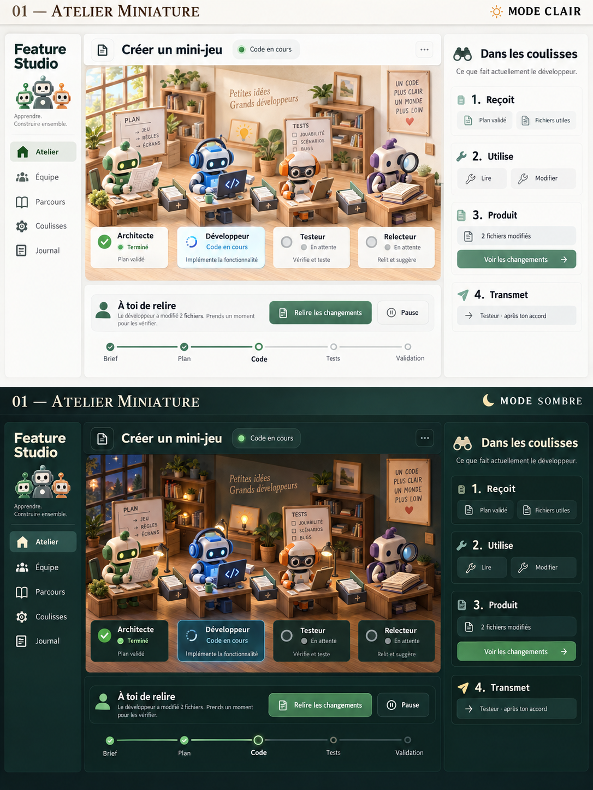
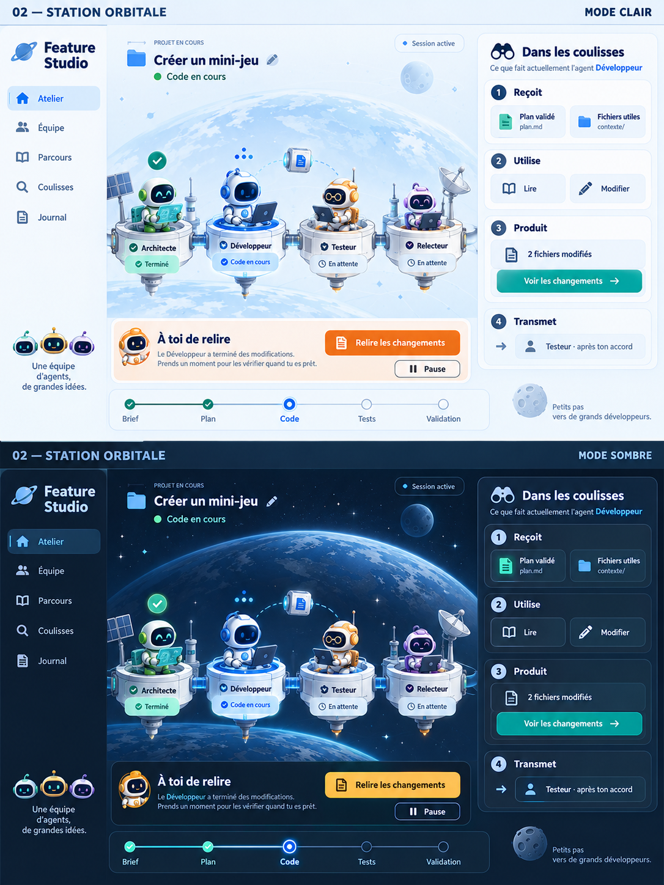
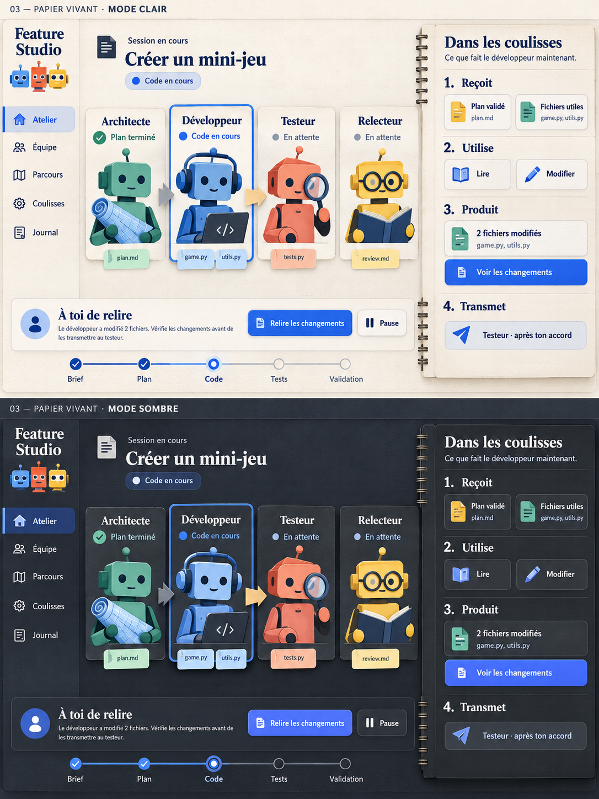
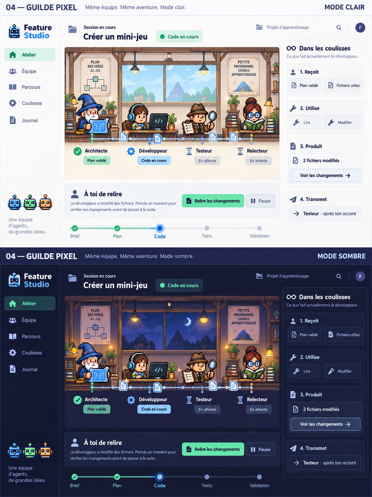
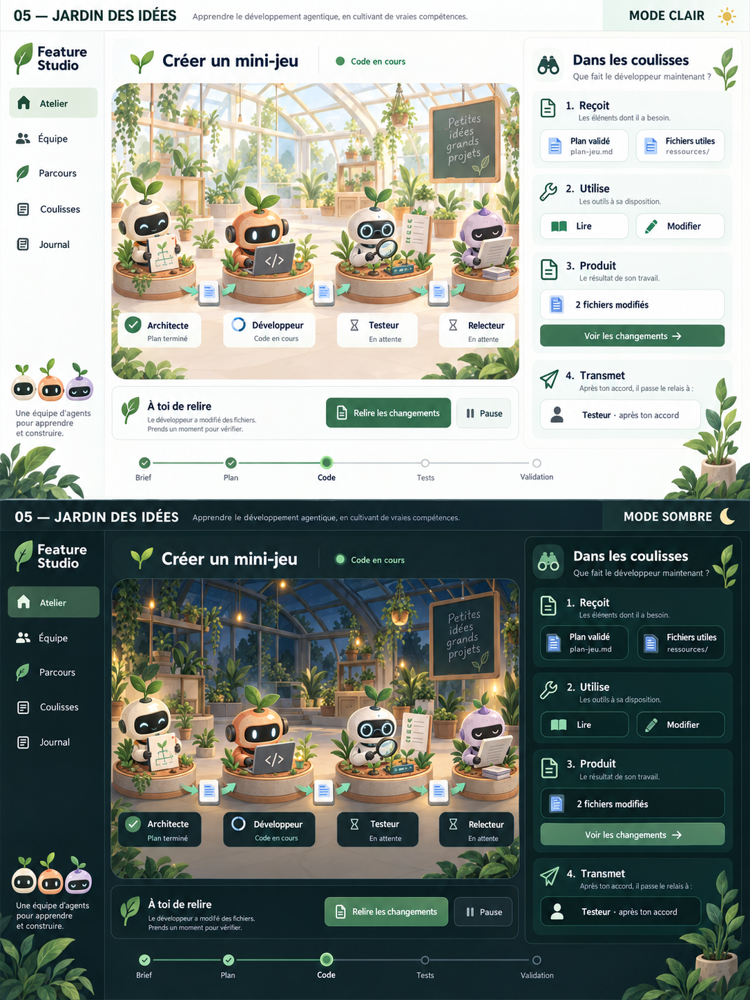

01Atelier miniature
Chaleureux et vivant
Un studio miniature habité, où les documents passent de bureau en bureau.
Clair : Lin, sauge et terre cuiteSombre : Vert forêt, bois sombre et ambre

Ouvrir la planche 01 ↗Des pistes visuelles pour apprendre le développement agentique et prendre plaisir à piloter son équipe. Chaque planche présente le même écran en mode clair puis en mode sombre.
Dans les coulisses reste le fil conducteur : ce que l’agent reçoit, les outils utilisés, le résultat produit et ce qu’il transmet.
Clique sur une planche pour ouvrir l’image originale en grand.
Chaleureux et vivant
Un studio miniature habité, où les documents passent de bureau en bureau.

Ouvrir la planche 01 ↗Immersif et spectaculaire
Une station spatiale modulaire : chaque agent a son poste, et le travail suit une route de mission.

Ouvrir la planche 02 ↗Sobre et pédagogique
Des fiches d’agents et des dossiers tangibles, avec les coulisses présentées comme un carnet.

Ouvrir la planche 03 ↗Ludique et proche des avatars existants
Une guilde de métiers en pixel art, avec des commandes modernes et une circulation visible des documents.

Ouvrir la planche 04 ↗Calme et singulier
Une serre de projets : des postes de travail reliés par un chemin visible, dans une ambiance organique.

Ouvrir la planche 05 ↗